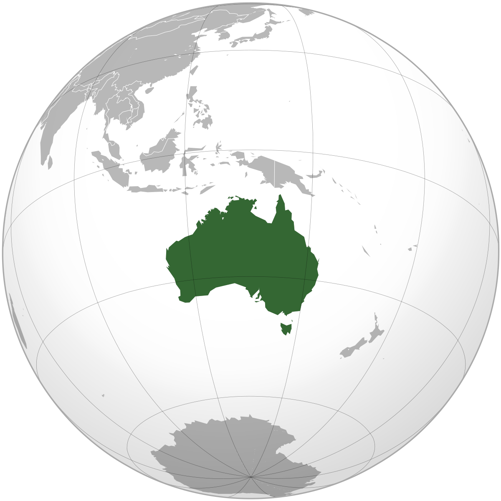
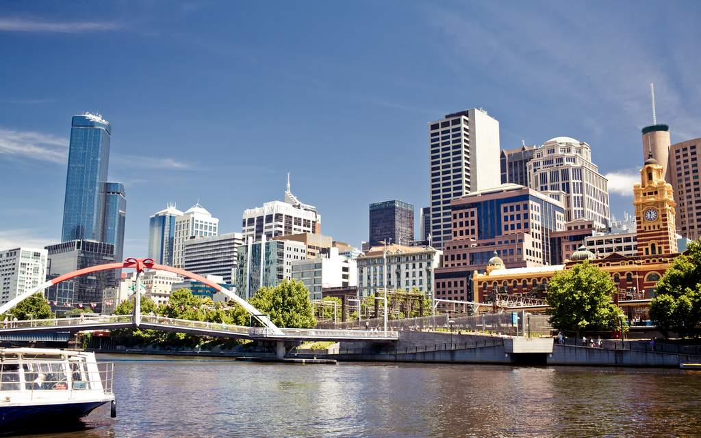
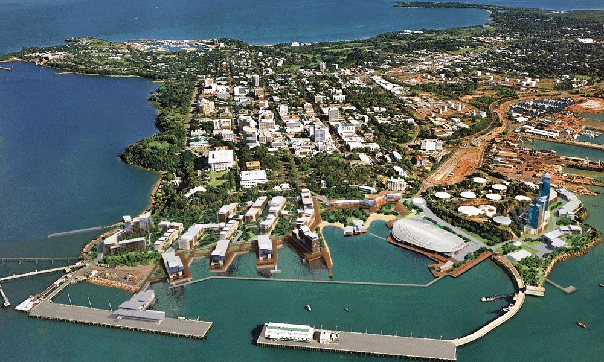
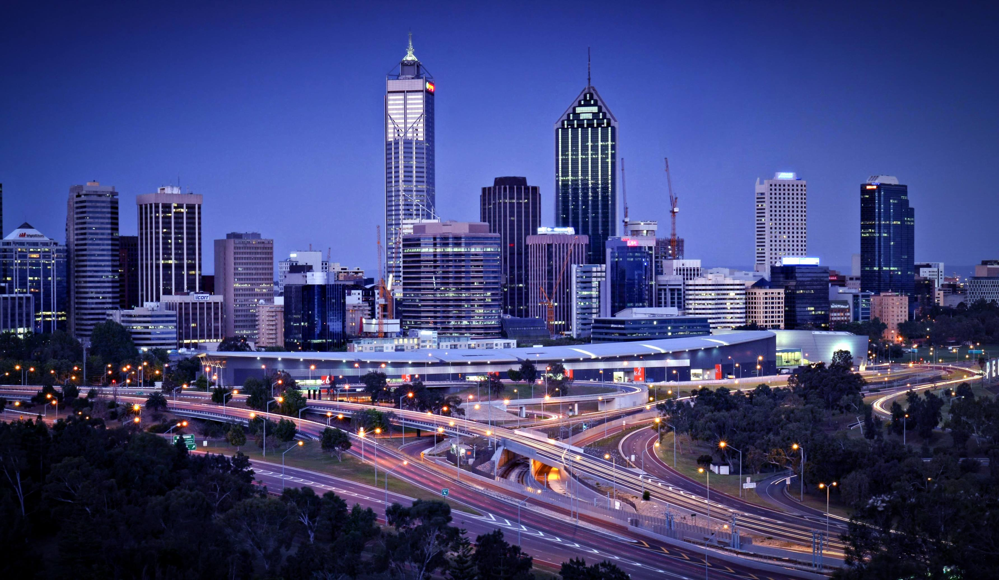

Australia, officially the Commonwealth of Australia, is a sovereign country comprising the mainland of the Australian continent, the island of Tasmania, and numerous smaller islands. It is the largest country in Oceania and the world's sixth-largest country by total area.It is a highly developed country, with the world's 14th-largest economy. The neighbouring countries are Papua New Guinea, Indonesia, and East Timor to the north; the Solomon Islands and Vanuatu to the north-east; and New Zealand to the south-east. The population of 26 million is highly urbanised and heavily concentrated on the eastern seaboard.
Adelaidean is used to denote the city and the residents of Adelaide. It is situated on the Adelaide Plains north of the Fleurieu Peninsula, between the Gulf St Vincent in the west and the Mount Lofty Ranges in the east. Its metropolitan area extends 20 km from the coast to the foothills of the Mount Lofty Ranges, and stretches 96 km from Gawler in the north to Sellicks Beach in the south.
Darwin is the capital city of the Northern Territory of Australia, situated on the Timor Sea. It is the largest city in the sparsely populated Northern Territory, with a population of 148,564. It is the smallest, wettest and most northerly of the Australian capital cities, and acts as the Top End's regional centre. The Darwin region, like much of the Top End, experiences a tropical climate with a wet and dry season.
Perth is the capital and largest city of the Australian state of Western Australia . It is named after the city of Perth, Scotland and is Australia's fourth-most populous city, with a population of 2.06 million living in Greater Perth. Perth is part of the South West Land Division of Western Australia, with most of the metropolitan area on the Swan Coastal Plain, a narrow strip between the Indian Ocean and the Darling Scarp. The first areas settled were on the Swan River at Guildford, with the city's central business district and port (Fremantle) both later founded downriver.
